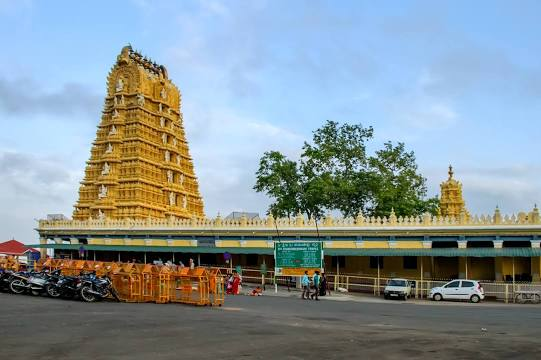
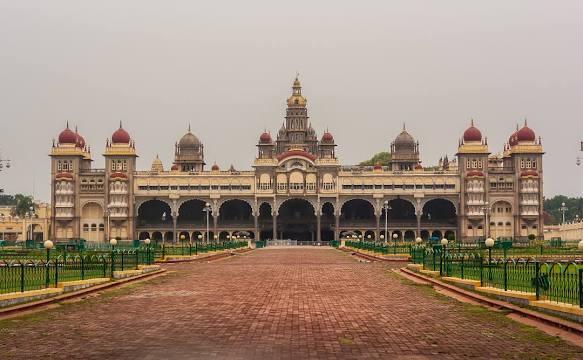
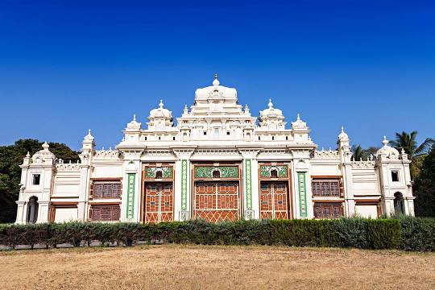
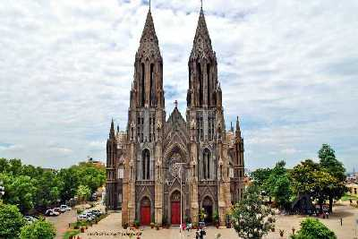

Historical Places in Mysore

The Chamundeshwari Temple is a Hindu temple located on the top of Chamundi Hills about 13 km from the palace city of Mysuru in the state of Karnataka in India.

Mysore Palace, also known as Amba Vilas Palace, is a historical palace and a royal residence. It is located in Mysore, Karnataka.

Jaganmohan Palace, officially Sri Jayachamarajendra Art Gallery, is a mansion, arts museum and auditorium, and formerly an alternative royal residence of the ruling maharaja of Mysore.

Recognized as the second tallest church of Asia, St. Philomena's Church was constructed to pay tribute to the Catholic Saint and martyr of Roman Catholic Church, Saint Philomena.